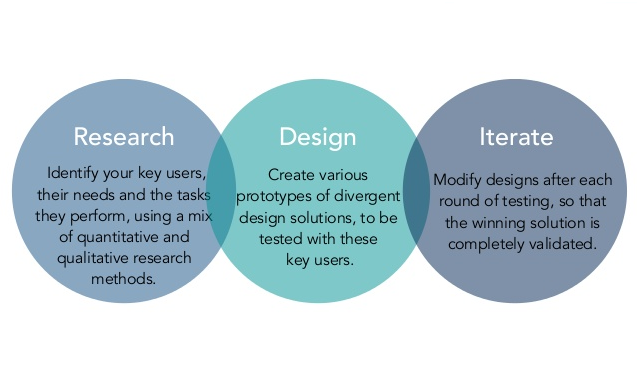

Seek
- Real-time Q/A
- Question limitation to 2 questions per week per student
- Messaging solution for groups
- Data will be stored indefinitely
- Helps coordination between Teacher and Teacher’s Assistant

Compatible with iPhone and iPod touch. Requires iPhone OS 2.2 or later. WiFi, Edge, or 3G network connection sometimes required.
Requires Android 2.3 and higher. WiFi, Edge, or 3G network connection sometimes required.

Design process
Research
There has been a rapid rise in the creation and use of real-time messaging applications, mainly because of the ease of use and it's accessibility. We wanted to bring the same ease of use and accessibility to student teacher commnunication which mainly relys on E-Mail and in-person meetings.We conducted user interviews to narrow down the users problem with current form of communication.The users for our applications are students, teaching assistants and teachers.
Users Problem
- Teachers are very busy with other activities and may ignore emails till they have free time
- The time to reply on emails is between 4 hours to 2-3 days
- More emails are received during the start of semester and when a deadline is approaching
Other findings
- Text and instant messaging is widely used in peer communication but not for academic purpose
- Students check texts and messages more often than Email
- Current instant messaging apps distract students from studying
Based on the findings and problems we came up with certain requirements that we envisioned would solve user problems
Requirements
- Create a system that is real-time like instant messaging applications but is primarily used for student-teacher communication
- Create a system that will help teachers respond to queries in a timely manner without taking too much of their time
- Improve the flow of information to reduce the load on Teacher and Teaching assistants
- The system should allow teachers to define and implement office hours and delegate tasks
- The system should be accessible to everyone and data should not be emphemeral
Design
{kind=link}
iChat
In this scenario students use a chat messaging service to ask TAs and the professor questions during class. While the professor is lecturing we see that, in the 1st sketch, the student has a question. Instead of interrupting the professor in the middle of a lecture, the student logs into Canvas. Canvas has a static chat box labeled iChat that stays open for the students while they are in class. The TA monitors iChat and answers any questions the students may have. All of the students can see what each other are typing, so if multiple students have the same question, only one student needs to ask the questions. This type of system would only work during class, but the professor could continuously lecture without being interrupted to answer questions, unless the TA could not answer a particular question. If that circumstance were to occur, then a message would appear on the professor’s computer.
{kind=link}
Seek
In this scenario students use an mobile app to communicate with instructors, teaching assistants and classmate during the semester. At the beginning of each semester, students sign up for the groups of each class, the instructor and teaching assistant will be the admins of these groups. Each week, instructor and/or teaching assistants will host office hours on Seek to answer questions. Conversation will be saved for other students who cannot show up online during office hours. Student also can have informal chat in the group. Keywords and tags can be add to each question so it can be easily grouped and searched. Different channels for specific class subjects can be created by students, in order to discuss similar stuff.
Final Design
We chose to move forward with the Seek system. Seek fulfilled the most requirements out of all of our ideas.
- Seek will be a real-time messaging app, similar to Telegram or Slack
- Seek will only be accessible to post in at certain times of day. We don’t want Seek to bombard or overwhelm the teacher’s assistant or the teacher
- The app will keep everything on record and allow for multiple discussions to be created, so that not all questions will go in one chat
- The TA will be the first responder for most of the questions, but if there are questions that the TA can’t answer, he or she can flag them so the teacher knows that they must take a look at them.
{kind=link}
{kind=link}
{kind=link}
{kind=link}
Evaluation
Cognititve Walkthrough: We conducted cognitive walkthrough on lo Fidelity prototype using student persona and teaching assistant persona performing one task each The core tasks for our application is
- To post a question for the teaching assistant or instructor to answer
- to answer a question from a student. After the walkthroughs we have uncovered some usability problems
Based on the results we came up with the following Recommendations
- Moving the submit and cancel buttons on the questions page:The buttons can be placed at the bottom so that the user can immediately submit after writing the body of the message
- Toast Messages:Once the user has performed an action, a toast message should appear indicating the result of the action. E.g. On submitting the question, a toast message should appear saying “Question submitted successfully”
- Unread count:There should be an unread count against the group messages, so the user knows there are messages that he/she has not read.
High Fidelity Prototype

Interactive version
{kind=link}
{kind=link}
{kind=link}
{kind=link}
{kind=link}
{kind=link}
{kind=link}
{kind=link}
Evalutation
Expert user interview We conducted user interviews with 4 expert UX professionals. We had them perform 3 tasks and recordered there reviews via Questionnaires. The core tasks for our application is
- Log into application as a student and ask a question in H541 for project requirements
- Log into application as teaching assistant and answer the question posted in H565
- As teaching assistant check for group submissions for H565
We uncovered following problems and came with possible next steps to resolve those problems
Problems
- During our evaluations we found out that the user flow was not intuitive enough which caused the evaluator to keep searching for options to perform the task.
- The current green and red indicators of read and unread questions are not clear to most of the evaluators.
- There are minor incosistencies with menu placement and interaction as well as UI design for few components
Next steps
- An inbox feature where the user can see his/her asked questions will make it easier for the user to keep a track of his queries.
- Improve user flow to match the mental model of the user
- Create onboarding screens to make it easier for the users to understand the application
Summary
Through our interviews we discovered that there is a problem with effective communication between the teacher and student outside of the classroom. We came up with requirements that our solution must deliver on.
Based on these requirements we developed a paper prototype. Internal evaluations were conducted on this prototype design refinements took place.
A high-fidelity prototype was then created. External evaluations took place with UX designers and we further refined our design.
Updates
Version 1.1
Upcoming release- NEWInbox Feature
- FIXUI Tweaks
- FIXUser Flow improved
Version 1.0
Released on Decemeber 15th, 2016- NEWInitial Release
Contact
Contact Us
Seek is still in the prototyping phase and thus is not readily available to be released to the public. For inquiries into this design or concept, please feel free to reach out to us.